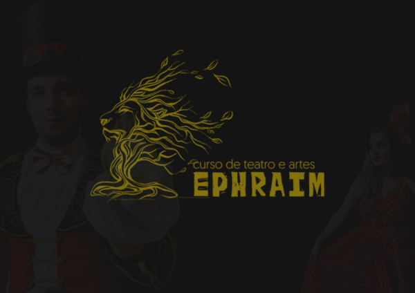

Sobre o curso
O Curso visa formar ministros da arte que entendam que a arte é uma ferramenta poderosa nas mãos de Deus. E carrega a responsabilidade de levar a mensagem de Cristo que cria, transforma, liberta e consola.
sejam instrumentação de Deus através da Arte